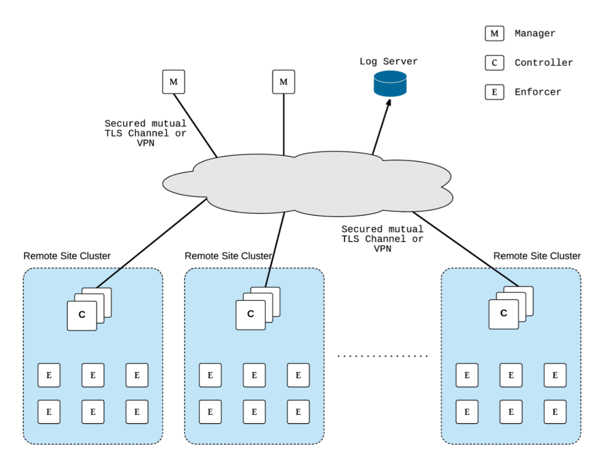

部署 SUSE® Security
规划部署
默认部署中的 SUSE® Security 个容器包括控制器、管理器、执行器、扫描器和更新器。必须考虑这些容器的部署位置（在哪些节点上），并创建适当的标签、污点或容忍度来控制它们。
执行器应部署在每个将要运行由 SUSE® Security 监控和保护的应用程序容器的主机/节点上。
控制器管理执行器的集群，可以与执行器部署在同一节点上，也可以部署在单独的管理节点上。管理器应部署在控制器运行的节点上，并将提供对控制器的控制台访问。其他所需的 SUSE® Security 容器，如管理器、扫描器和更新器，在下面引用的最佳实践指南中有更详细的描述。
如果您还没有这样做，请从 SUSE® Security Docker Hub 拉取镜像。
这些镜像位于 SUSE® Security Docker Hub 注册表中。请为管理器、控制器、执行器使用适当的版本标签，并将扫描器和更新器的版本保留为 'latest'。例如：
-
neuvector/manager:5.3.2
-
neuvector/controller:5.3.2
-
neuvector/enforcer:5.3.2
-
neuvector/scanner:latest
-
neuvector/updater:latest
请确保在适当的 yaml 文件中更新镜像引用。
如果使用当前的 SUSE® Security Helm 图表（v1.8.9+），应对 values.yml 进行以下更改：
-
将注册表更新为 docker.io
-
将镜像名称/标签更新为 Docker Hub 上的当前版本，如上所示
-
将 imagePullSecrets 保持为空
使用 Helm 或操作员进行部署
使用 Helm 进行自动化部署可以在 https://github.com/neuvector/neuvector-helm. 找到
支持使用操作员进行部署，包括 RedHat 认证操作员和 Kubernetes 社区操作员，相关的通用描述请参见 这里。SUSE® Security RedHat 操作员位于 https://access.redhat.com/containers/#/registry.connect.redhat.com/neuvector/neuvector_operator,，社区操作员位于 https://operatorhub.io/operator/neuvector_operator.
使用 ConfigMap 部署
支持使用 ConfigMap 在 Kubernetes 上进行自动化部署。有关更多详细信息，请参见 使用 ConfigMap 部署 部分。
部署控制器
我们建议运行多个控制器以实现高可用性 (HA) 配置。控制器使用基于共识的 RAFT 协议选举领导者，如果领导者出现故障，则选举另一位领导者。因此，活动控制器的数量应为奇数，例如 3、5、7 等。
控制器 HA
控制器将同步彼此之间的所有数据，包括配置、策略、对话、事件和通知。
如果主要活动控制器出现故障，将自动选举新的领导者并接管。
请特别注意确保始终有一个控制器在运行并准备就绪，特别是在主机操作系统或编排平台更新和重启期间。
备份和持久数据
请定期从控制台导出配置文件并将其保存为备份。
如果您在 HA 配置中运行多个控制器，只要有一个控制器始终在线，所有数据将在控制器之间同步。
如果您希望保存日志，例如违规、威胁、漏洞和事件，请在设置中启用 SYSLOG 服务器。
SUSE® Security 支持 SUSE® Security 策略和配置的持久数据。这配置了一个实时备份，以便从控制器 Pod 挂载一个卷到 /var/neuvector/。主要用例是当持久卷被挂载时，配置和策略在运行时存储到持久卷中。在集群完全故障的情况下，当新集群创建时，配置会自动恢复。配置和策略也可以从 /var/neuvector/ 卷中手动恢复或删除。
|
如果未挂载持久卷，SUSE® Security 不会将配置或策略存储为持久数据。在停止 allinone 或控制器容器之前，请务必备份控制器的配置和策略。这可以在 |
持久卷示例
集群中定义的 PersistentVolume 是支持持久卷所必需的。对 SUSE® Security 的要求是访问模式需要为 ReadWriteMany(RWX)。并非所有存储类型都支持 RWX 访问模式。例如，在 GKE 上，您可能需要使用 NFS 存储创建一个 RWX 持久卷。
一旦创建了 PersistentVolume，需要为控制器创建如下的 PersistentVolumeClaim。目前，持久卷仅用于控制器中的 SUSE® Security 配置备份文件（策略、规则、用户数据、集成等）和注册表扫描结果。
apiVersion: v1
kind: PersistentVolumeClaim
metadata:
name: neuvector-data
namespace: neuvector
spec:
accessModes:
- ReadWriteMany
volumeMode: Filesystem
resources:
requests:
storage: 1Gi以下是 IBM Cloud 的示例：
apiVersion: v1
kind: PersistentVolumeClaim
metadata:
name: neuvector-data
namespace: neuvector
labels:
billingType: "hourly"
region: us-south
zone: sjc03
spec:
accessModes:
- ReadWriteMany
resources:
requests:
storage: 5Gi
iops: "100"
storageClassName: ibmc-file-retain-custom在创建 Persistent Volume Claim 后，修改 SUSE® Security 示例 yaml 文件，如下所示（旧部分已注释）：
...
spec:
template:
spec:
volumes:
- name: nv-share
# hostPath: // replaced by persistentVolumeClaim
# path: /var/neuvector // replaced by persistentVolumeClaim
persistentVolumeClaim:
claimName: neuvector-data还需在控制器或 Allinone 示例 yaml 中添加以下环境变量以支持持久卷。这将使控制器在启动时读取备份配置。
- name: CTRL_PERSIST_CONFIGConfigMaps 和持久存储
ConfigMaps 和持久存储备份仅在部署新 SUSE® Security 集群或集群故障并重启时读取。在滚动升级期间不会使用它们。
持久存储配置备份首先被读取，然后应用 ConfigMaps，因此 ConfigMap 设置优先。所有 ConfigMap 设置（例如更新）也将保存到持久存储中。
有关更多信息，请参见 ConfigMaps 部分。
在生产环境中更新 CVE 漏洞数据库
请参见每个示例部分以获取有关如何保持 CVE 数据库更新的说明。
CVE 数据库版本可以在控制台的漏洞选项卡中查看。您还可以检查更新器容器镜像。
docker inspect neuvector/updater"Labels": {
"neuvector.image": "neuvector/updater",
"neuvector.role": "updater",
"neuvector.vuln_db": "1.255"
}运行更新后，请检查控制器/全能日志中的 'version'。例如在 Kubernetes 中：
kubectl logs neuvector-controller-pod-777fdc5668-4jkjn -n neuvector | grep version
...
2019-07-29T17:04:02.43 |DEBU|SCN|main.dbUpdate: New DB found - create=2019-07-24T11:59:13Z version=1.576
2019-07-29T17:04:02.454|DEBU|SCN|memdb.ReadCveDb: New DB found - update=2019-07-24T11:59:13Z version=1.576
2019-07-29T17:04:12.224|DEBU|SCN|main.scannerRegister: - version=1.576访问控制台
默认情况下，控制台作为服务暴露在 8443 端口，或在每个主机上使用随机端口的 nodePort。有关关闭 HTTPS 或通过不允许 8443 端口访问控制台的公司防火墙访问控制台的选项，请参见第一部分基础 → 连接到管理器。
处理主机更新或具有 Pod 中断预算的自动扩展节点
维护或扩展活动可能会影响节点上的控制器。公有云提供商支持自动扩展节点的能力，这可能会动态驱逐包括 SUSE® Security 控制器在内的 Pod。为了防止对控制器的干扰，可以创建 SUSE® Security Pod 中断预算。
例如，创建以下文件 nv_pdb.yaml，以确保始终运行至少 2 个控制器。
apiVersion: policy/v1beta1
kind: PodDisruptionBudget
metadata:
name: neuvector-controller-pdb
namespace: neuvector
spec:
minAvailable: 2
selector:
matchLabels:
app: neuvector-controller-pod然后，
kubectl create -f nv_pdb.yaml在没有特权模式的情况下部署
在某些系统上，支持不使用特权模式进行部署。这些系统必须支持 seccomp 功能并设置 apparmor 控制文件。
请参阅关于 Docker 部署 的部分以获取示例 Compose 文件。
多站点，多集群架构
对于拥有多个地点的企业，每个地点可以部署一个单独的 SUSE® Security 集群，以下是建议的参考架构。每个集群都有自己的一套控制器，并单独管理。

请在此文件中查看更详细的描述 > SUSE® Security 多站点架构